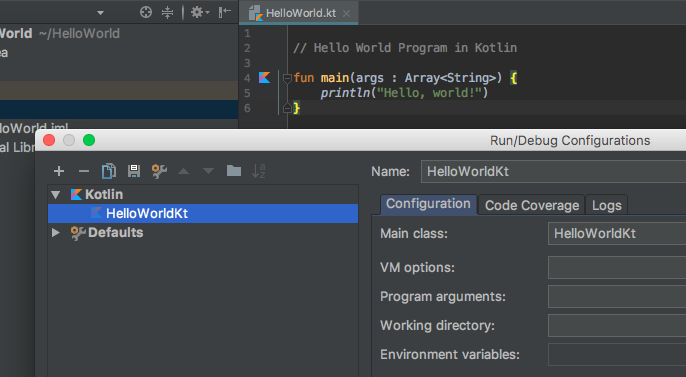
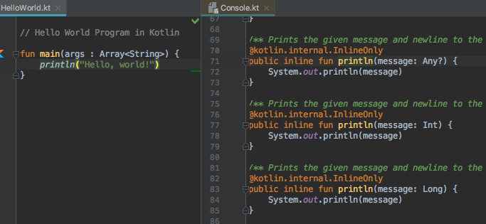

Kotlin Hello World - You First Kotlin Program
In this article, you will learn to write Hello World program in Kotlin.
A "Hello, World!" is a simple program that outputs Hello, World! on the screen. Since it's a very simple program, it's often used to introduce a new programming language.
Before you write the program, make sure your computer can run Kotlin. For that visit: How to Run Kotlin on Your Computer?
Let's explore how "Hello, World!" program works in Kotlin.
Kotlin "Hello, World!" Program
// Hello World Program
fun main(args : Array<String>) {
println("Hello, World!")
} When you run the program, the output will be:
Hello, World!
How this program works?
// Hello World Program
Any line starting with//is a comment in Kotlin (similar to Java). Comments are ignored by the compiler. They are intended for person reading the code to better understand the intent and functionality of the program. To learn more, visit Kotlin comments.fun main(args : Array<String>) { ... }
This is themainfunction, which is mandatory in every Kotlin application. The Kotlin compiler starts executing the code from themainfunction.
The function takes array of strings as a parameter and returns Unit. You will learn about functions and parameters in later chapters.
For now, just remember thatmainfunction is a mandatory function which is the entry point of every Kotlin program. The signature ofmainfunction is:fun main(args : Array<String>) { ... .. ... }println("Hello, World!")
Theprintln()function prints the given message inside the quotation marks and newline to the standard output stream. In this program, it printsHello, World!and new line.
Comparison With Java "Hello, World!" program
As you know, Kotlin is 100% interoperable with Java. Here's an equivalent Java "Hello, World!" program.
// Hello World Program
class HelloWorldKt {
public static void main(String[] args) {
System.out.println("Hello, World!");
}
}Few Important Notes
- Unlike Java, it is not mandatory to create a
classin every Kotlin program. It's because the Kotlin compiler creates the class for us.
If you are using IntelliJ IDEA, go toRun>Edit Configurationsto view this class. If you named your Kotlin file HelloWorld.kt, the compiler creates HelloWorldKt class.
 - The
println()function callsSystem.out.println()internally.
If you are using IntelliJ IDEA, put your mouse cursor next toprintlnand go toNavigate>Declaration( Shortcut: Ctrl + B . For Mac: Cmd + B), this will openConsole.kt(declaration file). You can see thatprintln()function is internally callingSystem.out.println().
